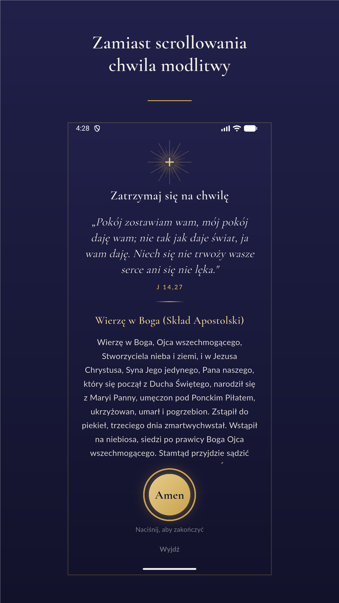
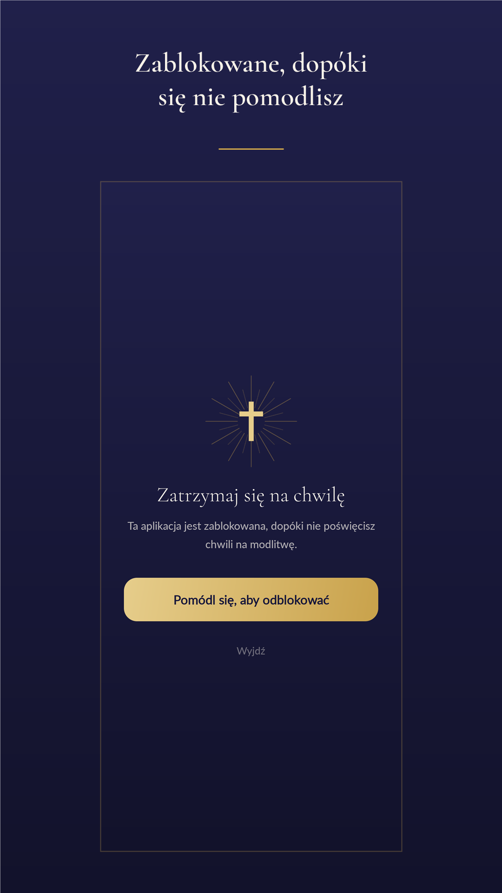
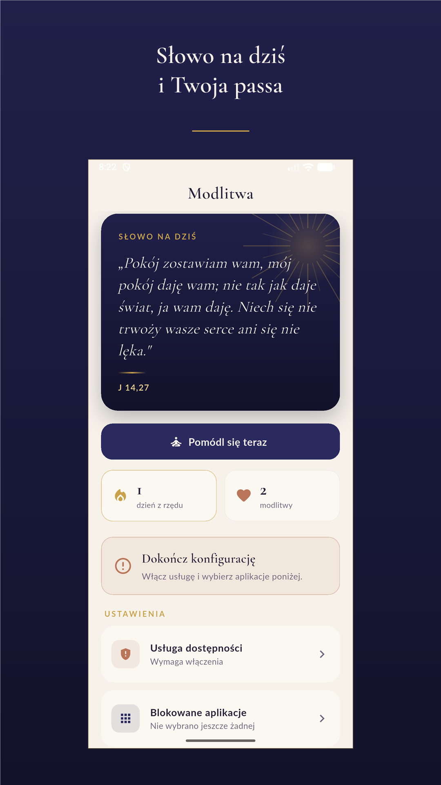

Zatrzymaj się na chwilę
Modlitwa blokuje wybrane przez Ciebie aplikacje, dopóki nie poświęcisz minuty na modlitwę.
Pobierz z Google PlayAndroid 8.0 lub nowszy · bez kont · bez reklam
Znasz to
Sięgasz po telefon, żeby sprawdzić godzinę. Odkładasz go czterdzieści minut później i nie umiesz powiedzieć, co się w międzyczasie stało.
Postanowienie, że dziś będzie inaczej, wytrzymuje do pierwszego odruchu. Bo odruch nie pyta o pozwolenie — po prostu otwiera aplikację.
Modlitwa wchodzi dokładnie w ten moment. Nie zabiera Ci telefonu. Wstawia jedną chwilę między odruch a ekran.
Jak to działa
Wybierasz aplikacje
Media społecznościowe, gry — cokolwiek Cię pochłania.
Próbujesz je otworzyć
Zamiast nich pojawia się zaproszenie do modlitwy.
Modlisz się — i masz dostęp
Po modlitwie aplikacje są odblokowane do północy albo na wybrany czas.
Jak wygląda



Co dostajesz za darmo
Blokowanie aplikacji — dowolnych, które sam wskażesz.
Modlitewnik offline — 26 modlitw: pacierz, różaniec z tajemnicami, pełna Koronka do Miłosierdzia Bożego, akty, modlitwy poranne i wieczorne. Wszystko działa bez internetu.
Słowo na dziś — krótki fragment Pisma Świętego na każdy dzień.
Passa — ile dni z rzędu udało Ci się zatrzymać na modlitwę.
Twoje intencje — zapisujesz własnymi słowami, zostają na telefonie.
Za darmo · Android 8.0 lub nowszy
Modlitwa jest za darmo
Wszystko powyżej jest i pozostanie bezpłatne. Nie sprzedajemy modlitwy.
Opcjonalny Modlitwa Plus dokłada mocniejsze narzędzia samokontroli: krótkie okna dostępu zamiast odblokowania do północy, harmonogramy, natychmiastową blokadę, Tryb Mszy i tryb „napisz intencję".
Czego aplikacja nie zrobi
Blokada opiera się na usłudze dostępności Androida. Jeśli wyłączysz ją w ustawieniach telefonu albo użyjesz „wymuś zatrzymanie" lub „wyczyść pamięć", ochrona przestanie działać do czasu, aż włączysz ją z powrotem — na telefonach Samsung system usuwa wtedy całe uprawnienie.
Aplikacja pokaże wprost, że nie pilnuje, i nie będzie udawać, że potrafi się temu przeciwstawić.
Modlitwa ma wspierać Twoje postanowienie, nie zastępować go.
Pytania
Czy aplikacja czyta mój ekran?
Nie. Sprawdzamy wyłącznie nazwę aplikacji, która jest na wierzchu — na przykład com.instagram.android. Treści ekranu system technicznie nam nie udostępnia, bo o taki dostęp nie prosimy. Nie odczytujemy też wpisywanego tekstu ani haseł.
Czy działa bez internetu?
Tak. Modlitwy, słowo na dziś i cała blokada działają offline. Sieć jest potrzebna wyłącznie do obsługi zakupu Plusa i sprawdzenia jego stanu.
Czy moje intencje gdzieś trafiają?
Nie. Intencje, ustawienia, passa i lista blokowanych aplikacji zostają na telefonie i nigdy go nie opuszczają. Nie ma kont, reklam ani analityki. Odinstalowanie aplikacji usuwa te dane.
Da się to obejść?
Tak — i mówimy o tym wprost. Wystarczy wyłączyć usługę dostępności w ustawieniach telefonu. Aplikacja natychmiast pokaże, że nie pilnuje. To narzędzie do wspierania postanowienia, nie kajdany.
Ile trwa modlitwa przed odblokowaniem?
Tyle, ile zajmuje przeczytanie modlitwy dnia — zwykle kilkadziesiąt sekund. Możesz też wybrać tryb pisania własnej intencji, który wymaga chwili uwagi.
Czy muszę płacić?
Nie. Blokowanie aplikacji, modlitewnik, słowo na dziś i passa są bezpłatne bez ograniczeń czasowych. Plus jest dodatkiem, nie warunkiem korzystania.